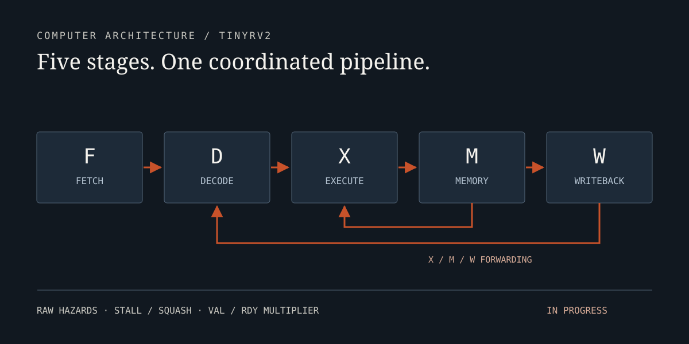

01
Pipelined RISC-V Processor
Computer architecture · Fall 2026 · In progress
Five-stage TinyRV2 with forwarding, hazard detection, stall/squash control, and a val/rdy multiplier. Directed and randomized RTL verification.